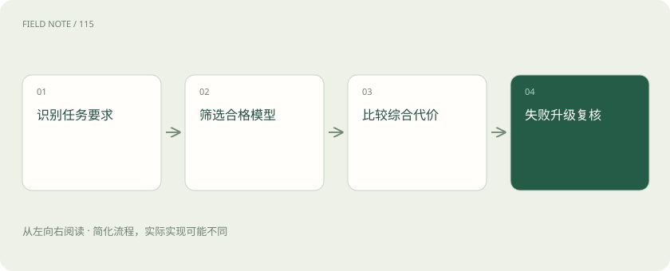

先读哪些知识
先用一个类比理解
像总机选择接哪位专家，MoE 则更像专家脑内调用不同技能模块。
类比只帮助建立直觉，不等同于技术的完整机制。
一图看懂

概念边界
模型路由是在多个模型或服务之间选择处理请求的对象。它与 MoE 不同：MoE 通常在模型内部按词元激活部分专家，应用路由则在调用边界选择模型，两者可以同时存在。
内部怎样运作
路由应先识别任务类别与最低质量要求，再比较价格、等待时间和失败后的补救成本。困难度判断也会出错，应保留升级路径。离线平均分不能掩盖少数高风险任务的大幅退化。
把机制放进具体场景
把订单号抽取交给较小模型、复杂合同解释交给能力更强的模型，属于应用路由。若小模型抽错导致人工返工，不能只比较每次接口单价；还应计入升级调用和补救成本，并保留难度误判的样本。
取舍与容易忽略的限制
路由策略自身也需要评价。若困难度分类器把长文本一律判为困难，可能增加费用却没有改善结果；若只根据历史平均延迟选择模型，又可能忽略当前排队。应保留任务类型和路由理由，并检查升级是否真正补救了首次失败，而不是让两次错误调用共同增加总成本。
放在一起对比
| 方式或概念 | 主要作用 | 关键边界 |
|---|---|---|
| 模型路由 | 应用调用边界选择模型 | 比较质量和总成本 |
| MoE | 模型内部选择专家 | 关注词元分发与负载 |
放进真实场景
SCENARIO
同一个合同审查请求可能包含简单字段抽取和复杂风险解释。按子任务路由比整份文档只选一个模型更灵活，但也增加结果衔接责任。
别踩这个误区
便宜模型首次调用省钱，但若大量返工或升级，总成本可能增加。
想一想
应用层模型路由与 MoE 专家路由处于同一层吗？
不是，前者选择模型服务，后者通常在模型内部选择参与词元计算的专家。
关联阅读
资料与边界
本文为原创知识讲解。类比和图示经过简化；示例数字不代表实测或报价。整理日期：2026-11-04。文末列出对应技术的原始资料，具体功能与版本支持请以原文为准。